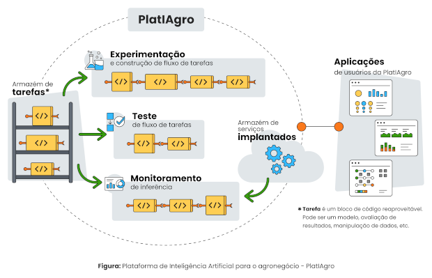

A Plataforma de IA para o agronegócio – PlatIAgro – tem como objetivo, a partir de tecnologias de machine learning, visão computacional e sistemas de diálogo, permitir o desenvolvimento de aplicações por diferentes atores da cadeia do agronegócio, como produtores, indústria e órgãos fiscalizadores. Sua espinha dorsal é composta por soluções de código aberto que são disponibilizadas em repositórios públicos para a comunidade.

O Que Você Vai Aprender
- Como usar IA para prever falhas em máquinas agrícolas.
- Como construir um fluxo de experimentação utilizando as Tarefas da PlatIAgro.
- Como realizar a implantação de um fluxo de tarefas.
- Como conectar uma aplicação a modelos implantados na PlatIAgro.
Do Que Você Precisa Para Este Tutorial
- Um ambiente com a PlatIAgro pronta para uso.
Para dar início a um projeto, clique no botão "Novo Projeto", localizado acima da lista de projetos.
Ao clicar no botão será aberto um formulário onde é possível informar um nome e descrição.
Após confirmar a operação, você será direcionado à página do projeto.
Após criar um novo projeto, será possível experimentar vários fluxos de tarefas, seja para o treinamento de modelos ou visualização de resultados.
Posteriormente, será possível decidir qual deles seguirá para implantação.
Importar um Conjunto de Dados
- No painel central, selecione a tarefa "Conjunto de Dados". Os detalhes da tarefa irão aparecer à direita.
- Clique no botão "Selecionar" e escolha o arquivo "FalhaMaquinasAgricolas.csv", obtido no passo anterior.
- Clique no botão "Importar" para importar o conjunto de dados.
- Selecione o atributo alvo "Falhará em breve".
Criar um Fluxo de Experimentação
Selecione a tarefa "Pre-Selection" dentro do painel "Engenharia de dados".
Selecione a tarefa "AutoML Classifier" dentro do painel "Treinamento".
Executar Fluxo de Experimentação
Clique no botão "Executar", a seguinte mensagem será exibida: "Executando o fluxo"
Quando a execução do fluxo for concluída com sucesso, as tarefas ficarão destacadas em verde.
Visualizar Resultados
Algumas tarefas criam gráficos e tabelas para melhor visualização dos resultados do experimento.
Clique na tarefa AutoML Classifier, e no painel à direita clique no botão "Visualizar resultado" para ver a matriz de confusão para o modelo treinado.
Abrir notebook Jupyter
A PlatIAgro utiliza Jupyter notebooks para facilitar a criação das tarefas. De fato, cada passo do fluxo de experimentação é um notebook.
Ainda no painel da tarefa AutoML Classifier, clique no botão "Abrir notebook no Jupyter".
Feche a janela do Jupyter para voltar à PlatIAgro.
Para que aplicações utilizem facilmente os modelos gerados na experimentação, a PlatIAgro permite a implantação de fluxos em um serviço REST.
No painel do experimento, clique no botão "Implantar".
Você será direcionado à página de fluxos implantados.
Conectar uma Aplicação a um Modelo Implantado
Vamos conectar um dashboard ao modelo implantado.
- Na tabela de fluxos implantados clique no botão Copiar, próximo a URL do serviço.
- Acesse a aplicação dashboard
- Clique em "Informar URL", preencha a URL copiada e clique em OK.
Aguarde uns instantes, e então você verá as probabilidades de falha retornadas pelo modelo.
Parabéns! Você utilizou a PlatIAgro para construir um fluxo de machine learning de ponta-a-ponta.
Próximos Passos
- Crie uma Tarefa na PlatIAgro
- Conheça as Tarefas Nativas da PlatIAgro